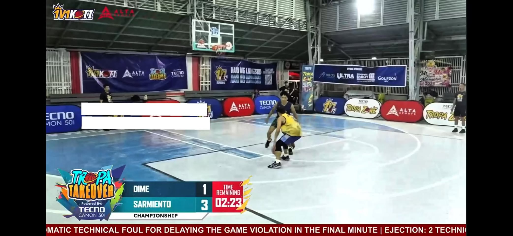
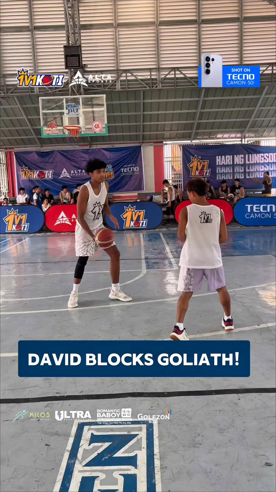
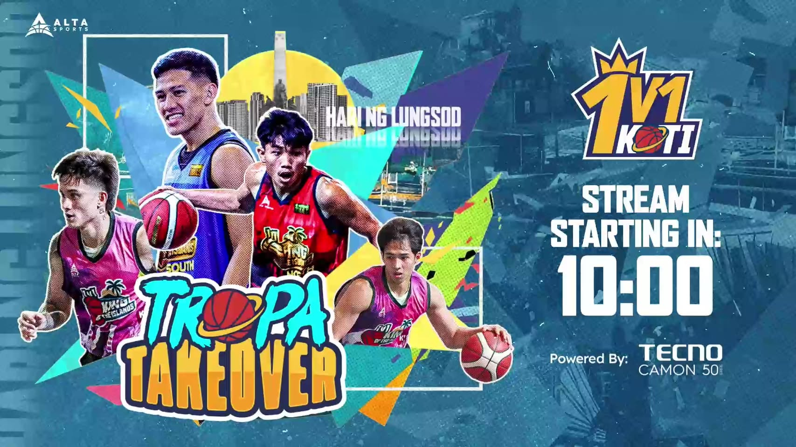

Community games across North 60 and South 61+.
Business Cooperation
Partner with KOTI
A proven Season 1 community model now scaling from full NCR coverage into bigger core-city qualifiers: live events, digital reach, city partnerships, creator influence, and basketball culture in one sponsor-ready property.
Grassroots athletes in the KOTI player system.
Digital views / exposure from season reporting.
Government-unit cooperation and local access.
Why Sponsor Now
Season 1 proved the format. Season 2 scales the market.
A sponsor is not buying a first-time idea. KOTI already proved community participation through 121 barangay-level games, then upgraded the model into larger core-city qualifiers with full NCR coverage.
Season 1 promoted KOTI through 121 community games, building a North 60 and South 61+ regional base.
Season 2 has already covered the whole NCR area, proving the city qualifier model before the route expands into more regions.
Game clips, matchup graphics, player moments, and FB / TikTok posts turn every city stop into sponsor-visible media.
What Sponsors Actually See
Proof should look like an event, not a claim.
KOTI can show court energy, sponsor inventory, player stories, and branded content frames. These are the assets a sponsor can imagine using in its own report.

Court InventoryBoards, score bug, game frame
Visible assets around the court help sponsors understand what they can own.

Player StoryLocal hero content
Every city qualifier creates named player stories that work for reels, recaps, and sponsor posts.

Brand MaterialTropa Takeover visuals
Campaign graphics and match visuals make the tournament easier to package for partners.
Activation Lanes
Choose barangay penetration or venue spectacle.
Barangay events and mall events solve different sponsor problems. Splitting them makes KOTI easier to sell to both local businesses and larger consumer brands.
For sponsors who want community trust, local reach, and direct presence in places that are harder to reach through normal media buying.
- Barangay-level player recruitment
- Community sampling and booth presence
- Local government and public program alignment
- Neighborhood crowd, family, and youth engagement
For sponsors who want a cleaner public stage, stronger brand visibility, creator moments, and content that looks premium on social media.
- Mall atrium or high-footfall venue setup
- Livestream, scoreboard, and sponsor boards
- Product display, demos, and creator appearances
- Brand-safe photos and highlight reels
Sponsor Fit
Different venues, different business outcomes.
The same 1v1 format can be sold differently. Barangay games sell trust and penetration. Mall games sell visibility, content quality, and brand-safe public experience.
Best for telco, FMCG, delivery, local services, city programs, public-health campaigns, and brands that need real community entry.
Best for consumer electronics, apparel, beverage, lifestyle, banking, automotive, and brands that need controlled visuals and foot traffic.
Use barangay qualifiers for reach, then mall showcases or finals for high-production content, influencer presence, and sponsor reporting.
Local Sponsor Playbook
Remote courts can be more valuable than central venues.
For many Philippine local sponsors, the business goal is not only premium exposure. It is reaching communities that are harder to enter through paid media, mall ads, or city-center events.
Barangay stops create local permission: players, families, officials, and neighborhood crowds see the sponsor inside a real community event.
Food, beverage, telco, delivery, local finance, and service brands can run direct sampling, sign-ups, vouchers, and trials around the court.
Health, youth, education, sports development, and city campaigns can use KOTI as a credible youth-facing activity rather than a static booth.
Start with local court penetration, then bring winners, creators, and sponsor stories into a mall or finals stage for stronger media output.
Choose Your Goal
Start with the business problem, then choose the package.
This makes the sponsor page feel less like a price list and more like a campaign solution. A brand can quickly see which KOTI asset matches its goal.
Short clips, creator content, livestream mentions, and social recaps.
Venue branding, booth presence, product sampling, prizes, and audience engagement.
City stops, government cooperation, barangay-level reach, and venue relationships.
University championship, student crews, campus pride, and youth basketball culture.
ABCD Packages
Simple to buy, expandable by campaign.
Tabs keep the sponsor page short on mobile while still showing clear deliverables.
Partner Types
More than logo placement.
Own digital campaigns, player stories, or event visibility.
Bring KOTI to a community with government and venue cooperation.
Turn foot traffic into spectators, dwell time, and content moments.
Commercial Entry
Build your city campaign with KOTI.
For sponsorship, city cooperation, venue activation, and custom campaign discussion, contact the KOTI business team.